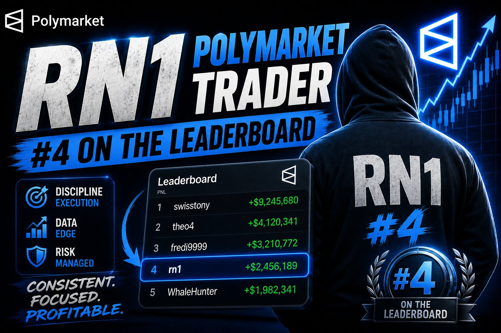

RN1's Strategy: Hunting Mispriced Underdogs Across 100,000+ Polymarket Bets

Unlike most high-volume Polymarket accounts, RN1 doesn't hide behind total anonymity — the profile links out to @RN1polymarket on X, putting a public face on a trading style that's built almost entirely on obscurity of a different kind: niche sports markets nobody else is watching closely. Joined December 2024, over 101,000 predictions placed, a biggest win of $242.7K, and a portfolio currently up more than $111,550 in a single day.
The active book reads like a tour of sport's undercard: ATP Challenger and ITF tennis qualifiers, Aston Villa vs. Bayern Munich goal totals, second-division English football, and even a Chinese Super League Over/Under. Where swisstony's book leans almost entirely on Under and No, RN1's is more balanced — Over bets, underdog moneylines, and Unders all show up depending on the specific match, suggesting a strategy built more around individual pricing errors than one repeated structural bet.
The strategy, stated plainly
RN1's positions cluster around two ideas. First, backing live underdogs in lower-tier tennis and football when the market seems to be pricing them purely off name recognition rather than current form — a position like Jerome Kym at 87.8¢ against a lesser-known opponent, or Amelia Rajecki at 58.6¢ in an ITF Roehampton qualifier, both moved sharply in RN1's favor. Second, taking a view on total goals in specific matchups — like an Over 2.5 in Aston Villa vs. Bayern Munich bought at 44.5¢ that more than doubled — where the trader appears to be pricing team-specific attacking or defensive tendencies more accurately than the market's default line.
What ties it together isn't a single mechanical rule the way swisstony's Under/No pattern does — it's coverage of markets thin enough that a sharper read on recent form, surface, or matchup context can still find real mispricings, match after match, across hundreds of lower-tier fixtures a week.
Why the numbers look good right now
Several positions show the pattern clearly: Jerome Kym backed at 87.8¢, now resolved to 100¢, up nearly 14%. An Aston Villa/Bayern Munich Over 2.5 bought at 44.5¢, now settled at 100¢, up 125%. A Beijing Guoan/Shenzhen Xinpengcheng Over 3.5 bought at 75.5¢, also resolved to 100¢. These aren't enormous individual positions — most sit in the $2,000–$25,000 range — but with over 100,000 lifetime predictions, small consistent edges compound into a day like this one, where the account is up over six figures.
Not everything lands. A Valentina Steiner position bought at 37.5¢ is currently marked down to 35.5¢, and a Leylah Fernandez position bought at 25¢ has slipped to 21.5¢ ahead of resolution — normal variance for a strategy that depends on being right more often than wrong across a very large number of individual match reads, not on any single trade being a lock.
Where this gets risky
Trading this many lower-tier, thinly-covered markets means liquidity can be shallow and lines can move fast on small volume — a real risk if a position needs to be exited early rather than held to resolution. It also demands a genuinely large amount of ongoing research or data infrastructure to keep an edge across hundreds of niche matchups a week; without that, the "obscure market" advantage disappears and what's left is just noise.
The takeaway
RN1's edge looks less like a single repeatable formula and more like broad, careful coverage of markets too small for the crowd to price efficiently — underdogs, goal totals, and matchup-specific reads spread across tennis and football leagues most bettors skip entirely. It's a strategy that rewards being everywhere the big money isn't.
See RN1's live positions and P&L directly on Polymarket.